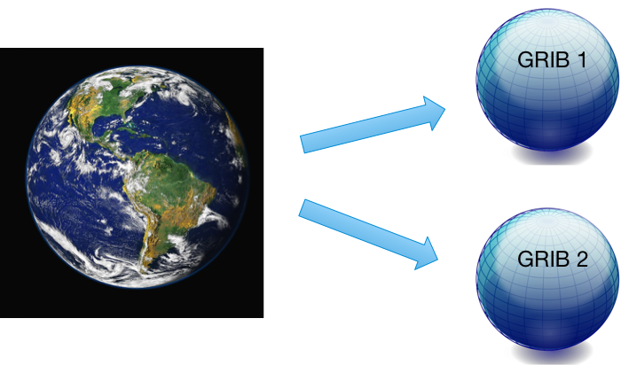

GRIB介绍
什么是GRIB？
Gerneral
Regularly-distributed
Information in
Binary form
GRIB是由世界气象组织 (World Meteorological Organization，WMO)的基本系统委员会（Commission for Basic Systems, CBS）在1985年定义的二进制文件格式，用于大量格点数据的交换。 广泛应用于编码由数值天气预报模式(Numerical Weather Prediction models)生成的数据。
GRIB 最初是 GRIdded Binary 的缩写，后来被扩展为 General Regularly-distributed Information in Binary form。

地球二维网格
GRIB文件长什么样？
GRIB 格式是面向二进制的数据交换格式，无法直接阅读，需要使用软件进行解码和编码。
下图是使用16进制编辑器打开 GRIB 文件的示例，除了最开始4个字节外，其余部分都无法解析成文本。 后面将会看到前4个字节对应的 ASCII 编码内容 GRIB 正是 GRIB 文件的标志。

WMO 二进制编码
WMO 提供对 GRIB 编码标准的完整描述文件 Manual on Codes。
这是 WMO 二进制编码 GRIB 的唯一官方文档，可以从 WMO 的官网上获取。
http://www.wmo.int/pages/prog/www/WMOCodes.html
每三年发布完整的说明文档。
每年两次发布作为新版本的代码表格，代码表格是说明文档的一部分。
最新版本的表格请访问 WMO 网站
http://www.wmo.int/pages/prog/www/WMOCodes/WMO306_vI2/LatestVERSION/LatestVERSION.html
GRIB 版本1和2
GRIB 是机器无关的。 目前可以使用两个不同版本的 GRIB 编码标准（版本1和版本2）。 两个版本的编码规则相似，但他们的实现方式完全不同。

GRIB结构
GRIB 是一种基于表格的存储格式，下面简单介绍 GRIB 的文件结构，详情请查阅相关资料。
GRIB 文件由一个或多个 GRIB 消息构成。
GRIB消息包含由八位字节序列组成的连续比特流。
每个消息可以编码为 GRIB 1或 GRIB 2 格式。单个文件可以混合保存两个版本的 GRIB 消息。
每个消息包含多个部分（sections）构成。但不同版本的 Section 含义不一样。
数据描述符是自定义的，相关信息保存在 GRIB 的表格和模板中。

下面是 GRIB 1 消息的示例。第8个字节 editionNumber 的值为 1。
***** FILE: data_2010-07-26_18.grib
#============== MESSAGE 1 ( length=4284072 ) ==============
1-4 identifier = GRIB
5-7 totalLength = 4284072
8 editionNumber = 1
====================== SECTION_1 ( length=52, padding=0 ) ======================
1-3 section1Length = 52
4 table2Version = 128
5 centre = 98 [European Centre for Medium-Range Weather Forecasts (common/c-1.table) ]
6 generatingProcessIdentifier = 136
7 gridDefinition = 255
8 section1Flags = 128 [10000000]
9 indicatorOfParameter = 165 [10 metre U wind component (m s**-1) (grib1/2.98.128.table) ]
10 indicatorOfTypeOfLevel = 1 [Surface (of the Earth, which includes sea surface) (grib1/local/ecmf/3.table , grib1/3.table) ]
11-12 level = 0
13 yearOfCentury = 10
14 month = 4
15 day = 30
16 hour = 18
17 minute = 0
18 unitOfTimeRange = 1 [Hour (grib1/4.table) ]下面是 GRIB 2 消息的示例。第8个字节 editionNumber 的值为 2。 对比两个版本的 GRIB 消息，可以看到不同版本的消息结构不一样。
***** FILE: gfs.t00z.pgrb2.1p00.f138
#============== MESSAGE 1 ( length=3801 ) ==============
1-4 identifier = GRIB
5-6 reserved = 0
7 discipline = 0 [Meteorological products (grib2/tables/2/0.0.table) ]
8 editionNumber = 2
9-16 totalLength = 3801
====================== SECTION_1 ( length=21, padding=0 ) ======================
1-4 section1Length = 21
5 numberOfSection = 1
6-7 centre = 7 [US National Weather Service - NCEP (WMC) (common/c-11.table) ]
8-9 subCentre = 0
10 tablesVersion = 2 [Version implemented on 4 November 2003 (grib2/tables/1.0.table) ]
11 localTablesVersion = 1 [Unknown code table entry () ]
12 significanceOfReferenceTime = 1 [Start of forecast (grib2/tables/2/1.2.table) ]
13-14 year = 2020
15 month = 1
16 day = 11
17 hour = 0
18 minute = 0GRIB 1与GRIB 2的主要区别
GRIB 1 和 GRIB 2 的结构不同，他们都由 section 构成，但代表不同的含义。
在 GRIB 2 中，多个变量使用更高的精度定义。
- GRIB 1 的经纬度使用 mili-degrees
- GRIB 2 的经纬度使用 micaro-degrees
GRIB 2 的经度值必须在0到360度之间。
两个版本的变量编码也不一样。GRIB 2 中数据的信息（变量、时间、统计值、网格等）基于模板（template）和表格（table）描述，更加灵活，但同时也更加复杂。